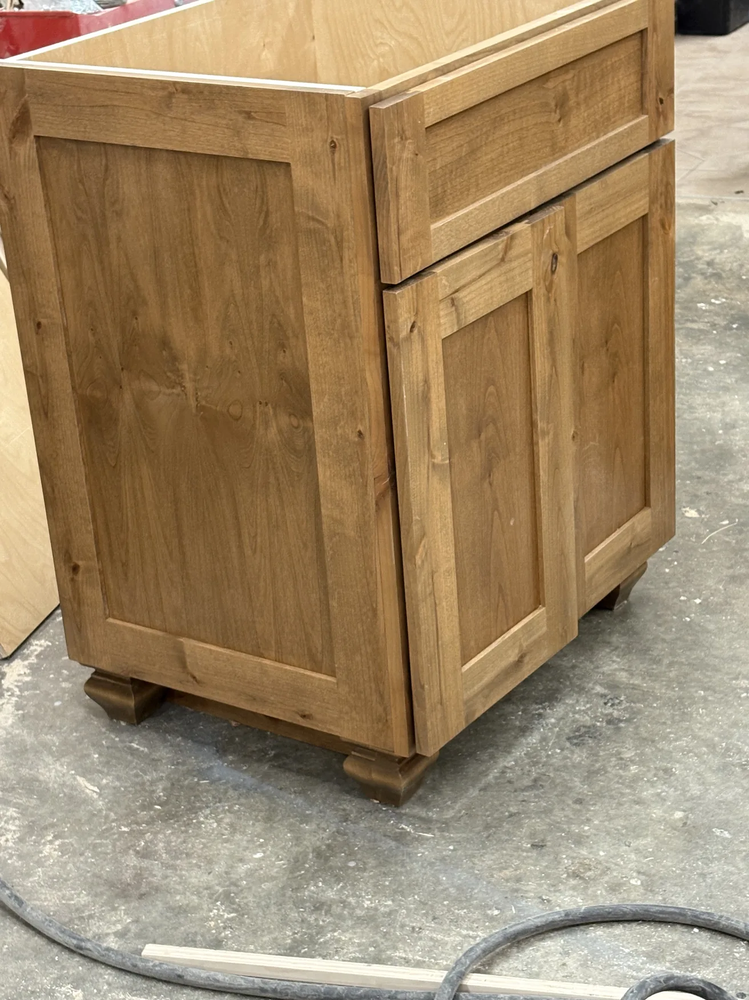

CUSTOM WORK
Cabinetry made to fit
Kitchens, vanities, offices, built-ins and fitted woodwork.


THE SHOP
Since 1998, T-Squared has built and fitted cabinetry for kitchens, baths and living spaces. Good work starts with the right materials, accurate measurements and a clean finish.
CABINETMAKING
We build custom cabinetry, vanities, offices and fitted woodwork. Each project begins with the room and how it will be used.
From material selection to installation, the standard is straightforward: a proper fit and work that holds up.

SHOP SERVICES
Custom cabinetry, full kitchen and bathroom projects, and carefully selected cabinet lines.
CUSTOM WORK
Kitchens, vanities, offices, built-ins and fitted woodwork.
RENOVATIONS
Cabinetry and finish work planned as part of a complete room renovation.
CABINET LINES
Fabuwood cabinetry, vanities and countertop material coordination.

THE FINISH
Materials, proportions and installation all shape the finished room.
We work through the layout and the details before construction, whether the right answer is fully custom cabinetry or a well-chosen cabinet line.
Project inquiryCommon questions
Custom work allows flexibility in wood species, layout, profiles and finish. Cabinet-line selections depend on the manufacturer and series.
We take on kitchen and bathroom renovation projects, including cabinetry and associated installation work. Scope is confirmed before the project begins.
Yes. Photos, rough measurements and a description are enough to start the conversation.
Yes. Winston-Salem and Mocksville are the main service areas. We also work in nearby communities; see the full list on the contact page or call to ask about your location.
PROJECT INQUIRIES
Call or share the basics of the project. Estimates start with a conversation.